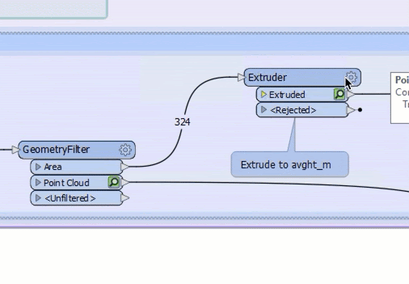
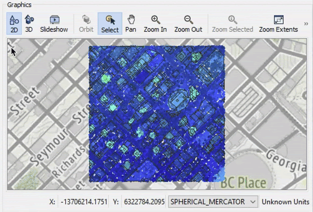

After completing this unit, you’ll be able to:
Amar has made some progress with his 2D to 3D building workspace, but feels that there is something wrong with the extrusions. Amar would like Sven to review his progress so far, so Amar has sent an FME Workbench template to Sven to examine.
Sven opens Amar's FME Workbench workspace: interactively-view-3d-data.fmw and runs the workspace to create the feature caches. The workspace displays some examples of best practices in authoring a workspace; collapsed bookmarks simplify the view and annotations explain what Sven is looking at.
Sven wants to inspect extruded building footprints and the point cloud at the same time to see if the building footprints have been extruded to an appropriate height by comparing the extrusions to the point cloud. Holding down the CTRL key (CMD on Mac) while clicking on caches allows Sven to select multiple caches to view in Visual Preview. Sven holds down CTRL and selects the Extruder|Extruded cache and the GeometryFilter|Point Cloud cache.

The 2D view doesn't show much of interest, but a rotated 3D view will. Sven clicks the 3D button in the Graphics window.
The background map disappears because background maps are not supported in the 3D view. Sven zooms in to an area of interest and then rotates the view using the Orbit tool.

Map tiles by Stamen Design, under CC BY 3.0. Data by OpenStreetMap, under CC BY SA.
Sven can see that many buildings are not extruded accurately. He guesses that this is a result of the buildings being extruded by an average height instead of a maximum height.
Make sure you have followed along with Sven’s steps.